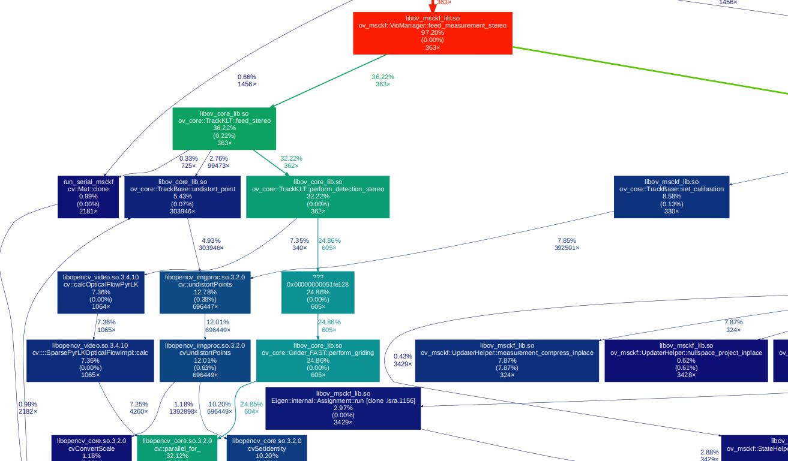

Profiling Processing Time
One way (besides inserting timing statements into the code) is to leverage a profiler such as valgrind. This tool allows for recording of the call stack of the system. To use this with a ROS node, we can do the following (based on this guide):
- Edit
roslaunch ov_msckf pgeneva_serial_eth.launch launch file
- Append
launch-prefix="valgrind --tool=callgrind --callgrind-out-file=/tmp/callgrind.txt" to your ROS node. This will cause the node to run with valgrind.
- Change the bag length to be only 10 or so seconds (since profiling is slow)
sudo apt install valgrind
roslaunch ov_msckf pgeneva_serial_eth.launch
After running the profiling program we will want to visualize it. There are some good tools for that, specifically we are using gprof2dot and xdot.py. First we will post-process it into a xdot graph format and then visualize it for inspection.

// install viz programs
apt-get install python3 graphviz
apt-get install gir1.2-gtk-3.0 python3-gi python3-gi-cairo graphviz
pip install gprof2dot xdot
// actually process and then viz call file
gprof2dot --format callgrind --strip /tmp/callgrind.txt --output /tmp/callgrind.xdot
xdot /tmp/callgrind.xdot
Memory Leaks
One can leverage a profiler such as valgrind to perform memory leak check of the codebase. Ensure you have installed the valgrind package (see above). We can change the node launch file as follows:
- Edit
roslaunch ov_msckf pgeneva_serial_eth.launch launch file
- Append
launch-prefix="valgrind --tool=memcheck --leak-check=yes" to your ROS node. This will cause the node to run with valgrind.
- Change the bag length to be only 10 or so seconds (since profiling is slow)
This page has some nice support material for FAQ. An example loss is shown below which was found by memcheck.
==5512== 1,578,860 (24 direct, 1,578,836 indirect) bytes in 1 blocks are definitely lost in loss record 6,585 of 6,589
==5512== at 0x4C3017F: operator new(unsigned long) (in /usr/lib/valgrind/vgpreload_memcheck-amd64-linux.so)
....
==5512== by 0x543F868: operator[] (unordered_map.h:973)
==5512== by 0x543F868: ov_core::TrackKLT::feed_stereo(double, cv::Mat&, cv::Mat&, unsigned long, unsigned long) (TrackKLT.cpp:165)
==5512== by 0x4EF8C52: ov_msckf::VioManager::feed_measurement_stereo(double, cv::Mat&, cv::Mat&, unsigned long, unsigned long) (VioManager.cpp:245)
==5512== by 0x1238A9: main (ros_serial_msckf.cpp:247)
Compiler Profiling
Here is a small guide on how to perform compiler profiling for building of the codebase. This should be used to try to minimize compile times which in general hurt developer productivity. It is recommended to read the following pages which this is a condenced form of:
First we need to ensure we have a compiler that can profile the build time. Clang greater then 9 should work, but we have tested only with 11. We can get the latest Clang by using the follow auto-install script:
sudo bash -c "$(wget -O - https://apt.llvm.org/llvm.sh)"
export CC=/usr/bin/clang-11
export CXX=/usr/bin/clang++-11
We then need to clone the analyzer repository, which allows for summary generation.
git clone https://github.com/aras-p/ClangBuildAnalyzer
cd ClangBuildAnalyzer
cmake . && make
We can finally build our ROS package and time how long it takes. Note that we are using catkin tools to build here. The prefix CBA means to run the command in the ClangBuildAnalyzer repository clone folder. While the prefix WS means run in the root of your ROS workspace.
(WS) cd ~/workspace/
(WS) catkin clean -y && mkdir build
(CBA) ./ClangBuildAnalyzer --start ~/workspace/build/
(WS) export CC=/usr/bin/clang-11 && export CXX=/usr/bin/clang++-11
(WS) catkin build ov_msckf -DCMAKE_CXX_FLAGS="-ftime-trace"
(CBA) ./ClangBuildAnalyzer --stop ~/workspace/build/ capture_file.bin
(CBA) ./ClangBuildAnalyzer --analyze capture_file.bin > timing_results.txt
The time-trace flag should generate a bunch of .json files in your build folder. These can be opened in your chrome browser chrome://tracing for viewing. In general the ClangBuildAnalyzer is more useful for finding what files take long. An example output of what is generated in the timing_results.txt file is:
Analyzing build trace from 'capture_file.bin'...
Time summary:
Compilation (86 times):
Parsing (frontend): 313.9 s
Codegen & opts (backend): 222.9 s
Files that took longest to parse (compiler frontend):
13139 ms: /build//ov_msckf/CMakeFiles/ov_msckf_lib.dir/src/update/UpdaterSLAM.cpp.o
12843 ms: /build//ov_msckf/CMakeFiles/run_serial_msckf.dir/src/ros_serial_msckf.cpp.o
...
Functions that took longest to compile:
1639 ms: main (/src/open_vins/ov_eval/src/error_comparison.cpp)
1337 ms: ov_core::BsplineSE3::get_acceleration(double, Eigen::Matrix<double, ... (/src/open_vins/ov_core/src/sim/BsplineSE3.cpp)
1156 ms: ov_eval::ResultSimulation::plot_state(bool, double) (/src/open_vins/ov_eval/src/calc/ResultSimulation.cpp)
...
Expensive headers:
27505 ms: /src/open_vins/ov_core/src/track/TrackBase.h (included 12 times, avg 2292 ms), included via:
TrackKLT.cpp.o TrackKLT.h (4372 ms)
TrackBase.cpp.o (4297 ms)
TrackSIM.cpp.o TrackSIM.h (4252 ms)
...
Some key methods to reduce compile times are as follows:
- Only include headers that are required for your class
- Don't include headers in your header files
.h that are only required in your .cpp source files.
- Consider forward declarations of methods and types
- Ensure you are using an include guard in your headers